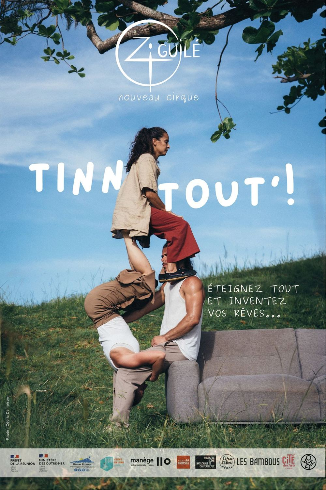

Création 2025
Tinn tout' !
« Éteignez tout ! » en créole réunionnais.
L'équipe s'est enfermée trois jours dans une maison de la Plaine des Cafres, déconnectée : téléphones et écrans éteints, jeux rangés. De cette expérience est né un spectacle joyeux et inventif : trois acrobates explorent un agrès inédit qui les relie en contrepoids. Parce que chacun tient grâce aux autres.
- Dès 4 ans
- 55 min
- Portés · aérien · musique